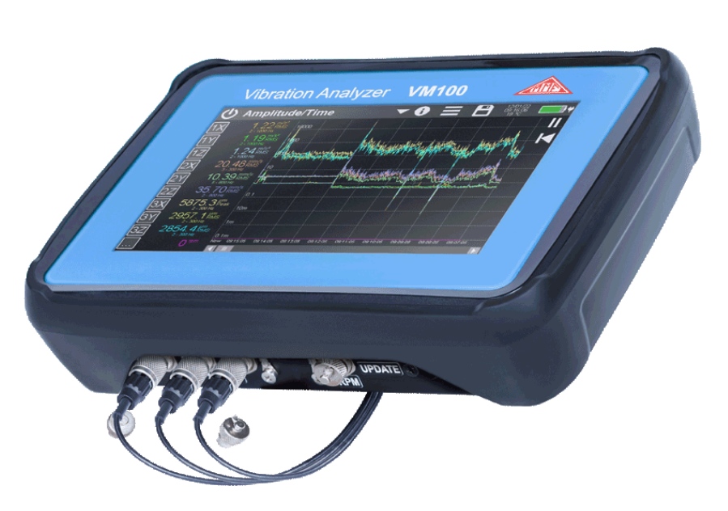
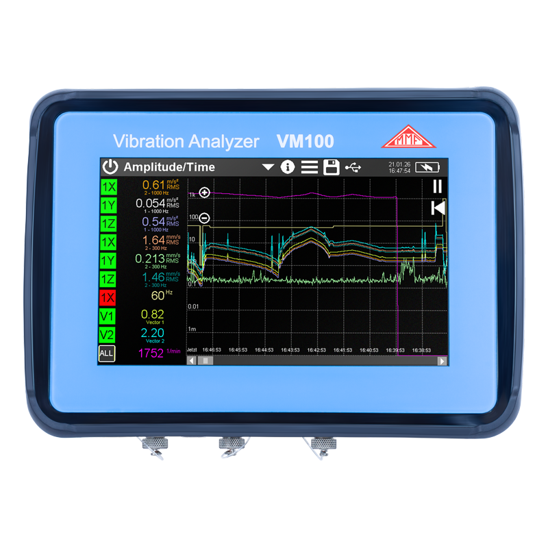
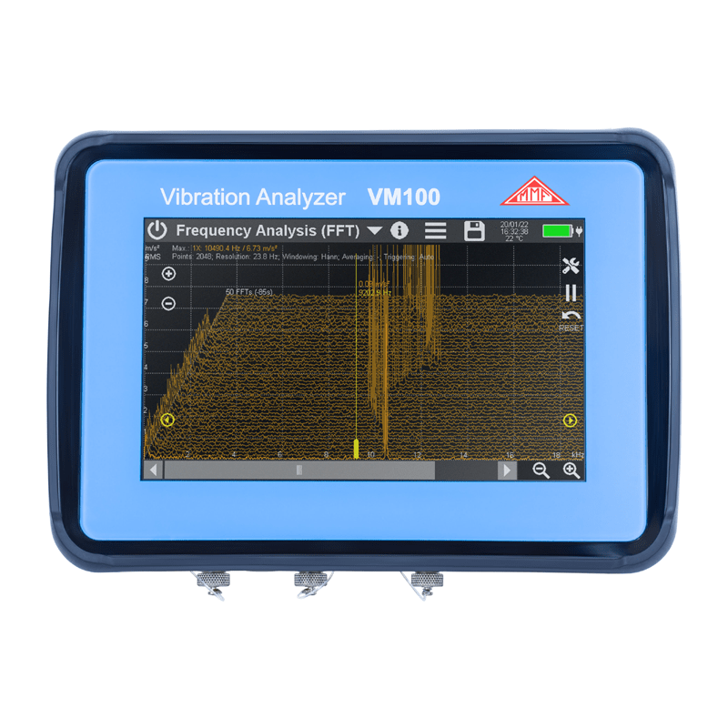
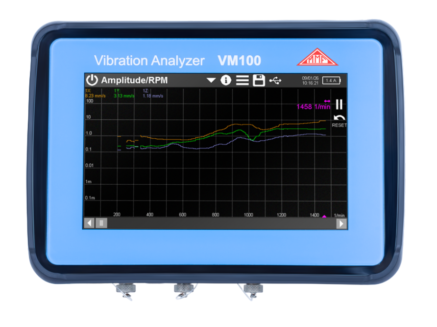
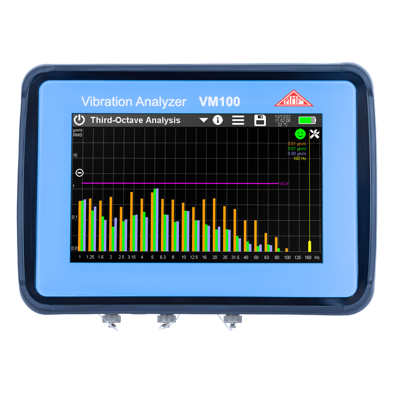
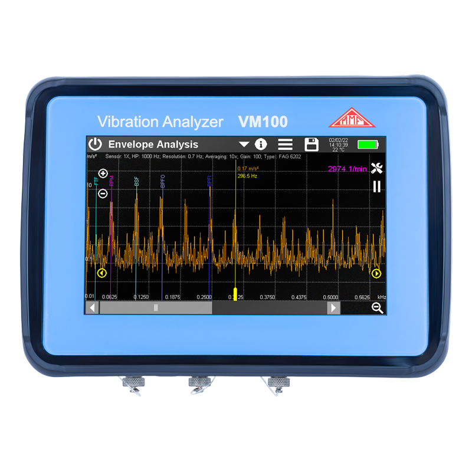
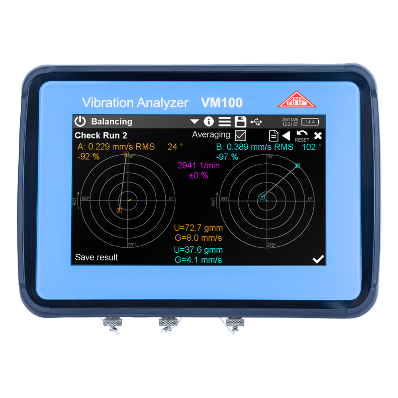
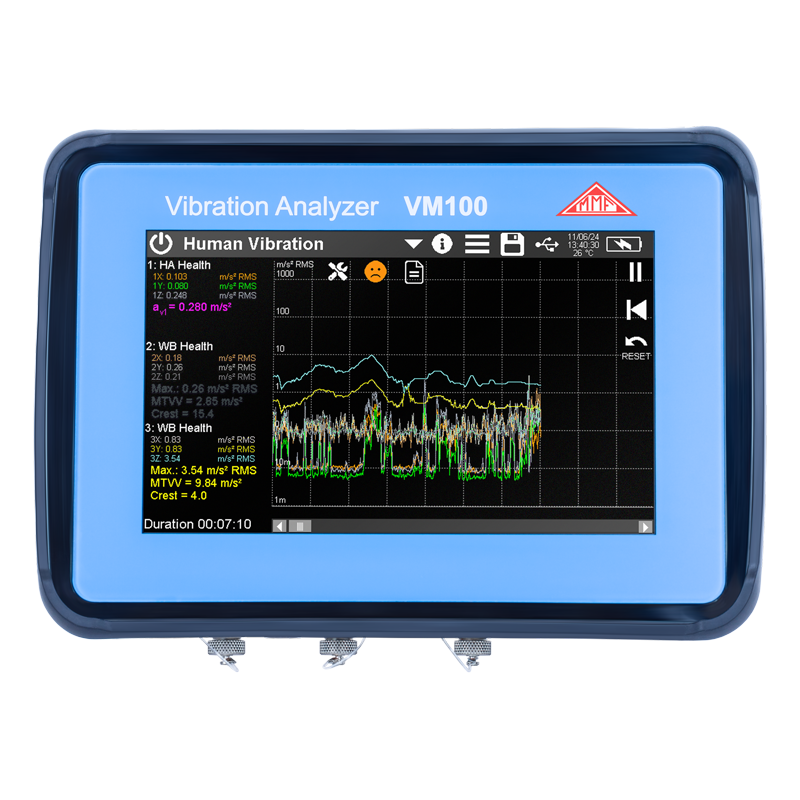
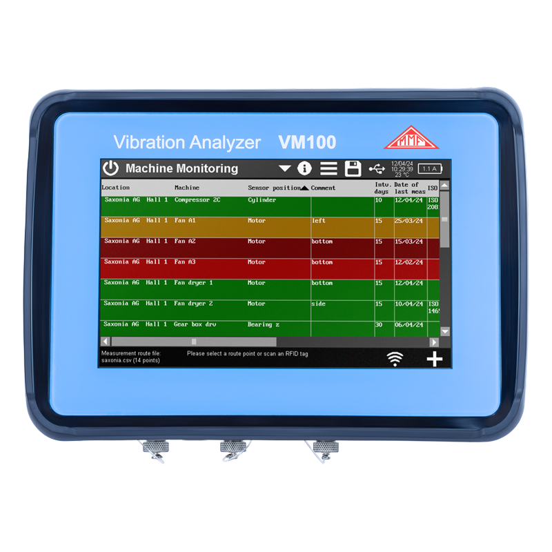

다채널 진동측정기 — 베어링진단·발란싱·인체진동 측정
독일 MMF사의 9채널 터치 스크린 진동측정 시스템. FFT 주파수 분석, Third-Octave, 인체진동(손-팔·전신), 발란싱, 롤러 베어링 진단, 런업/코스트다운 분석, VC/Nano 정밀 진동 측정까지 — 하나의 장비로 모든 현장 요구를 해결합니다.
단축 9개 / 3축 3개
(1채널 모드)
USB-C 충전
0.1 Hz 분해능

VM100 주요 기능 한눈에
기존 휴대용 진동측정기의 한계를 넘어선 멀티채널·멀티모드 측정 플랫폼입니다.
단축 9개 또는 3축 3개 구성. 하나의 기계에서 여러 포인트를 동시에 기록해 시간을 절약합니다.
최대 65,536포인트, 1Hz~22kHz 범위. 워터폴(50 스펙트럼) 및 스펙트로그램(300 스펙트럼) 모드 지원.
1~160 Hz, 21개 1/3 옥타브 밴드. VC·Nano 기준선 내장으로 정밀 장비 설치 환경을 현장 즉시 평가.
측정 위치·기계·경보 기준을 등록해 두고 NFC 태그로 순회 측정. 상태를 신호등(녹색·황색·적색)으로 자동 판정, ISO 기준 자동 매핑.
BPFI·BPFO·FTF·BSF 결함 주파수 마커 자동 표시로 롤러 베어링 손상을 조기 감지. 유지보수 계획 수립에 활용.
타코미터 입력 기반 1면/2면 밸런싱. 불균형량·교정 무게·각도를 현장에서 계산·표시, 별도 PC 불필요.
ISO 5349 손-팔 진동, ISO 2631-1 전신 진동, GB/T 4970 차량 승차감(시트·등받이·발판 3점)까지 하나의 라이선스로 지원. 일일 노출량(A(8))·잔여 시간 표시.
기동·정지 과정의 진폭/회전수(Amplitude-RPM) 곡선으로 공진 주파수를 탐색. 회전 기계 동적 특성 분석.
반도체 장비·전자현미경 설치 환경의 극미세 진동 평가. Third-Octave 화면에 VC·Nano 기준선 직접 표시.
TEDS 지원 센서를 연결하면 감도·직렬번호가 자동으로 인식. NFC 태그로 측정 포인트 자동 식별.
측정값은 CSV, 화면은 BMP, 원시 신호는 WAV로 저장. USB-C로 PC 연결 시 별도 드라이버 없이 Mass Storage로 인식.
센서 장착 방법이 고주파 측정 정확도를 좌우합니다
VM100의 FFT 분석은 최대 22kHz까지 측정하지만, 센서 장착 시 질량 증가와 장착 강성 저하가 겹치면 고주파 영역에서 실제 감도가 크게 떨어집니다. 스터드 마운팅이 가장 우수하고, 마그네틱·접착제·프로브 순으로 고주파 성능이 낮아집니다.

장착 방법별 상세 비교는 진동센서 원리·설치 가이드에서 확인할 수 있습니다.
측정 모드별 상세 사양
VM100은 기본 탑재된 전체값·FFT·Third-Octave 3가지 모드에, 5가지 옵션 라이선스 모듈(HUM·BAL·RPM·MAC·ENV)을 추가해 총 7가지 이상의 측정 모드를 하나의 장비에서 사용할 수 있습니다.
분석 화면 및 제품 외관
7인치 터치 스크린(800×480)으로 복잡한 분석 결과를 현장에서 직관적으로 확인합니다. 실제 VM100A 화면 캡처입니다.








VM100 상세 사양
| 항목 | 사양 |
|---|---|
| 측정 범위 | 가속도: 0.0001 ~ 100,000 m/s² · 속도: 0.0001 ~ 100,000 mm/s · 변위: 0.00001 ~ 100 mm |
| 전체값 측정 | 진동 가속도·속도·변위 / RMS(1s·무한), 피크(Hold Peak·Peak·Peak-to-Peak), 크레스트 팩터, 벡터 합(X/Y/Z), 주주파수 주파수 범위: 가속도 0.4 Hz~24 kHz · 속도 2~2,000 Hz · 변위 2~300 Hz |
| FFT 주파수 분석 | 동시 1~3채널 워터폴/스펙트로그램 포인트: 1,024 ~ 65,536 pt 트리거: Auto·Tacho·Level |
| Third-Octave 분석 (VM100-VC) | 1/3 옥타브 밴드 분석 / VC·Nano 기준선 내장 (반도체·정밀장비 설치 환경 평가) |
| 인체진동 (VM100-HUM) | 손-팔(Hand-Arm) 진동 — ISO 5349, 1손·양손 전신(Whole-Body) 진동 — ISO 2631-1, 건강·편의 평가 차량·선박 승차감 — 시트·등받이·발판 3점 동시 측정, GB/T 4970-2009 A(8) 일일 노출량 및 잔여 시간 실시간 표시 |
| 발란싱 (VM100-BAL) | 1면(정적)·2면(동적) 로터 발란싱 / 타코미터 연동 불균형량·교정 무게·각도 산출 |
| 엔벨로프 분석 (VM100-ENV) | 고역통과 + 포락선 검파 / BPFI·BPFO·FTF·BSF 베어링 결함 주파수 자동 표시 |
| 머신 모니터링 (VM100-MAC) | 측정 경로(Route) 등록·순회 측정 / NFC 태그 자동 식별 / 관리 기준 초과 경보 |
| 데이터 기록 | CSV (측정값) / BMP (화면 캡처) / WAV (원시 신호) USB-C, FAT 파일 시스템, Mass Storage 모드 (드라이버 불필요) |
| 디스플레이 | 7인치 TFT RGB 터치 스크린 / 800 × 480 해상도 |
| 보호 등급 | IP65 (분진·분사수 보호) |
| 전원 | 내장 충전지, USB-C 충전 / 1회 충전 10~14시간 연속 사용 |
| 타코미터 입력 | RPM 측정용 타코미터 입력 내장 |
| 센서 인식 | TEDS 지원 IEPE 센서 자동 감지 / NFC 태그를 통한 측정 포인트 자동 식별 |
VM100 모델 라인업
하드웨어(채널 수)와 옵션 라이선스 모듈을 조합해 측정 목적에 맞게 구성합니다.
하드웨어 모델
IEPE 입력 9채널 동시 계측. 다수 측정 포인트를 한 번에 기록해야 하는 정밀 진단·발란싱·경로 측정에 적합.
IEPE 입력 3채널 동시 계측. 소규모 설비 상태 감시·현장 점검용 경량 구성.
옵션 라이선스 모듈 (전체값·FFT·Third-Octave는 기본 탑재)
경로(Route) 기반 순회 측정·설비 이력 관리. NFC 태그로 측정 지점 자동 식별.
롤러 베어링 결함 조기 진단. BPFI·BPFO·FTF·BSF 자동 계산·표시.
로터 1면·2면 발란싱. 불균형량·교정 무게·각도를 본체에서 완결.
손-팔(ISO 5349)·전신(ISO 2631-1)·차량 승차감(GB/T 4970) 진동을 하나의 모듈로 측정.
기동·정지 과도 구간의 공진 주파수 탐색. 타코미터 동기화 분석.
Third-Octave 분석에 VC·Nano 기준선 표시. 반도체·정밀장비 설치 환경 평가.
적용 분야
펌프·모터·팬·압축기·기어박스의 9채널 동시 상태 모니터링. ISO 10816 기준 판정.
팬·임펠러·로터 등의 1면/2면 현장 발란싱. 별도 소프트웨어·PC 없이 장비 단독 완결.
반도체 장비·전자현미경 설치 바닥의 VC/Nano 기준 적합성을 Third-Octave로 즉시 판단.
차량 시트·선박 조종석의 전신 진동 노출량 평가. 운전자 건강·편의 규정 준수 확인.
전동 공구·착암기 사용 작업자의 일일 손-팔 진동 노출량(A(8)) 측정·관리.
건설 현장·교량·지반의 진동 영향 평가. Third-Octave·전체값으로 기준치 초과 여부 확인.
자주 묻는 질문
VM100 도입 상담 및 데모 문의
씨앤디테크는 MMF VM100 공급과 현장 적용 기술지원을 제공합니다. 측정 목적·채널 수·필요 모드(인체진동·발란싱·VC 등)를 알려주시면 최적 구성을 제안드립니다.
관련 기술자료 → VM25 휴대용 진동측정기(ISO 10816) · 진동센서 원리·설치 · 비틀림 진동